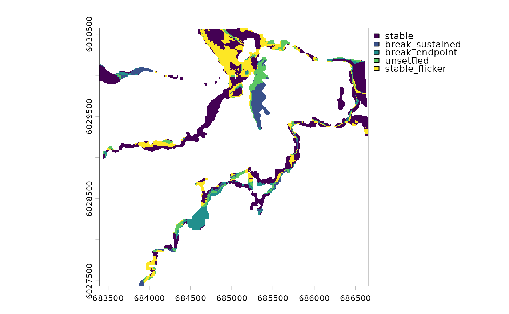

Temporal category of every pixel in a break-class scan
Source:R/dft_rast_break_category.R
dft_rast_break_category.Rddft_break_category() at pixel grain: the same "v1" rule, applied to the
per-pixel measurements rather than to the summary rows, so the label can be
mapped, patched, or crossed against anything else on the grid.
Arguments
- x
The list returned by
dft_rast_break_class().$breakssupplies the measurements and$rasterwhether the endpoints differ.$yearsis not needed here and not required:n_beforeandn_afterare measured per pixel, so the strength is read off them rather than recovered frombreak_yearthe waydft_break_category()must do at row grain. A result saved before drift 0.16.0 therefore works unchanged.- rule
Character. The labelling rule; only
"v1"exists. Recorded on the result as thedrift_break_rulemetadata tag, and implied by the category level labels themselves.- filename
Character or
NULL. Where to write the result. A floodplain-scale grid is worth putting somewhere you chose;NULLwrites a temporary file that R removes at the end of the session.The file carries the integer codes
0:4, not the labels: the levels are set on the returned object after the write, so no.tif.aux.xmlRAT sidecar is produced — one whose loss is silent, and which the rest of this package avoids for that reason.terra::rast(filename)therefore returns a plain integer raster; re-attach labels with the id order in@return, or keep the object this returns.- overwrite
Logical. Replace
filenameif it already exists. terra refuses by default and its error names this remedy, so the argument has to exist for the message to be actionable.
Value
A two-layer SpatRaster:
category— a factor with ids0:4labelledstable,break_sustained,break_endpoint,unsettled,stable_flicker, in that orderstrength—dft_break_strength()as an integer,NAoff a clean switch
NA where the pixel could not be scanned, which is every pixel with an
NA in any year.
Details
The rule, the reason levels 3 and 4 must never be summed, and why the
threshold is not an argument are all documented once, under
dft_break_category().
Memory
One streamed terra::app() pass over $breaks plus the transition layer,
written straight to filename — nothing full-grid is pulled into R, and the
chunk size is bounded rather than left to terra's memory heuristic, which
takes a 192M-cell grid in one or two chunks on a large machine.
See also
dft_break_category() for the same rule over summary rows;
dft_rast_break_class() for the measurements.
Examples
years <- 2017:2023
rasters <- lapply(years, function(yr) {
terra::rast(system.file("extdata", paste0("example_", yr, ".tif"),
package = "drift"))
})
names(rasters) <- years
res <- dft_rast_break_class(dft_rast_classify(rasters, source = "io-lulc"))
cat_r <- dft_rast_break_category(res)
terra::plot(cat_r[["category"]])

# pixel grain and summary grain are the same rule, so they agree
terra::freq(cat_r[["category"]])
#> layer value count
#> 1 1 stable 6117
#> 2 1 break_sustained 1098
#> 3 1 break_endpoint 1040
#> 4 1 unsettled 1265
#> 5 1 stable_flicker 2791